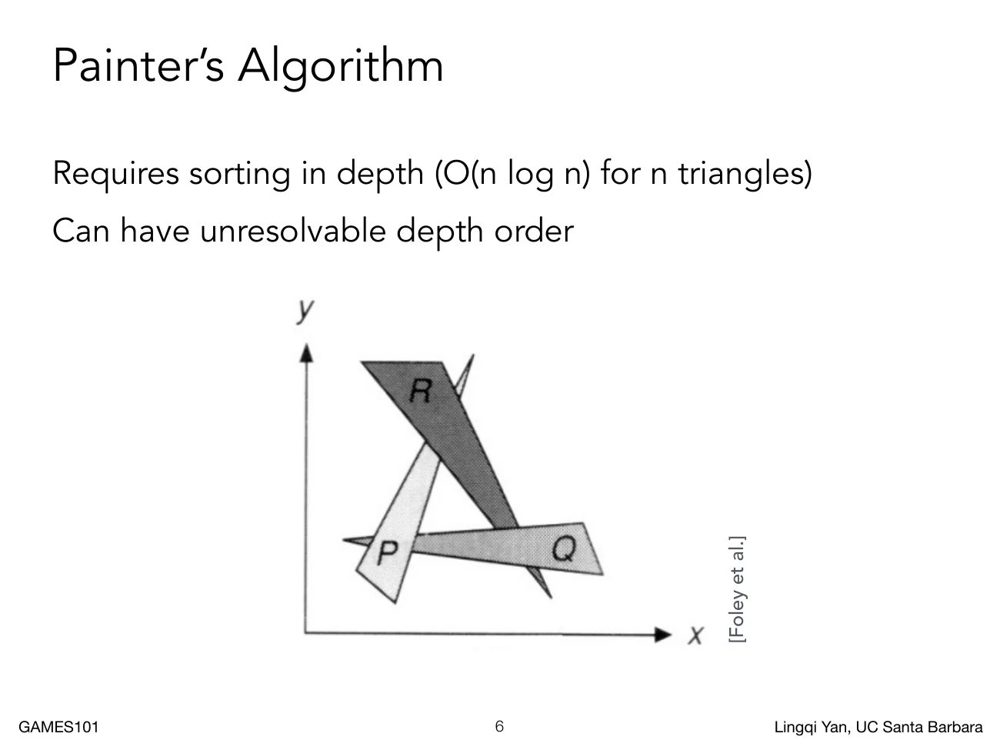
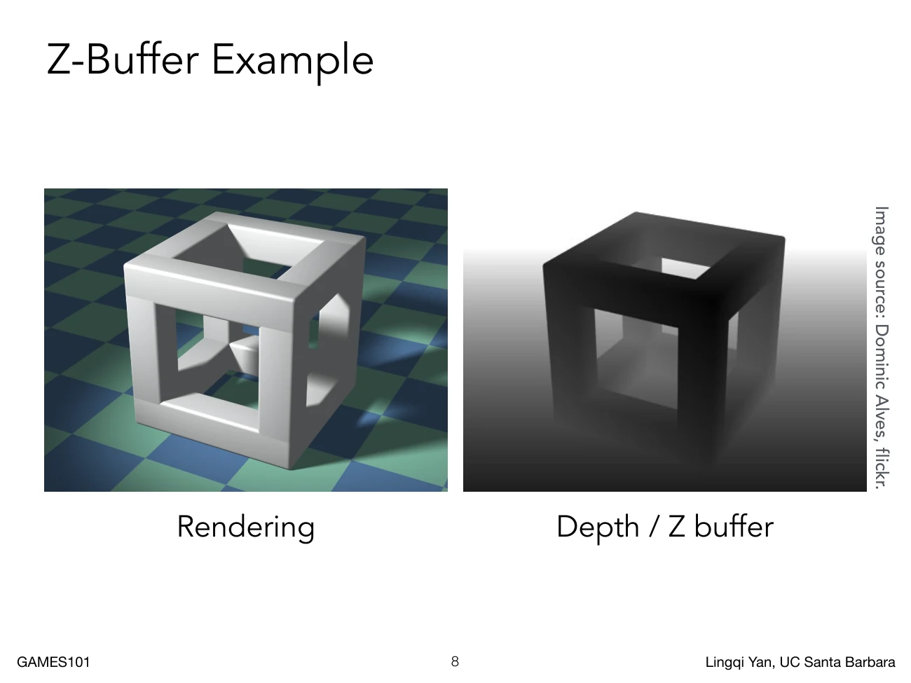
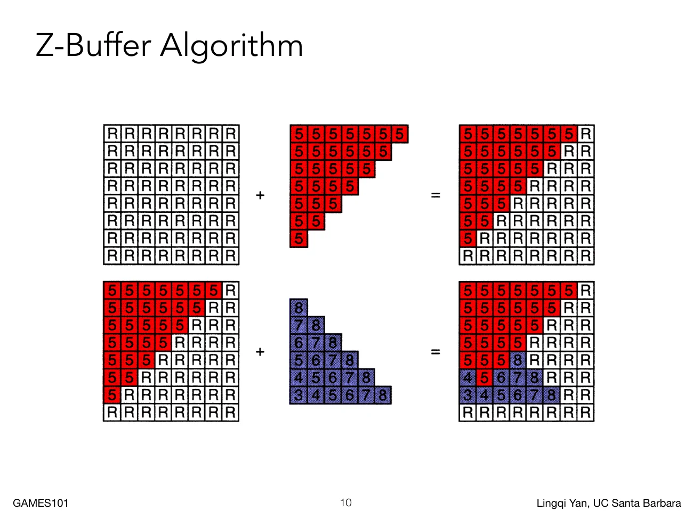
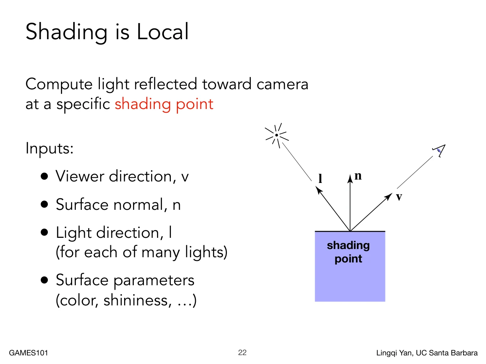
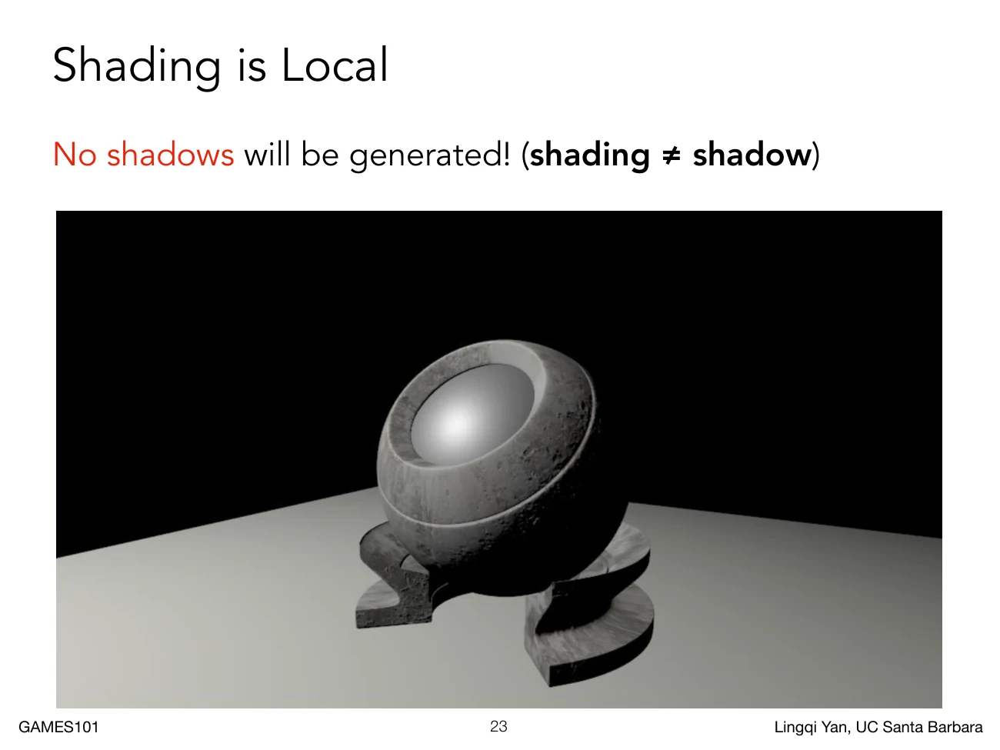
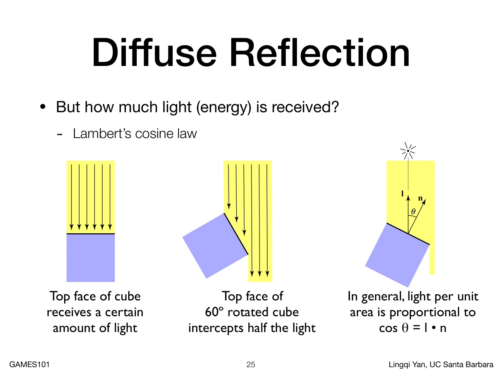
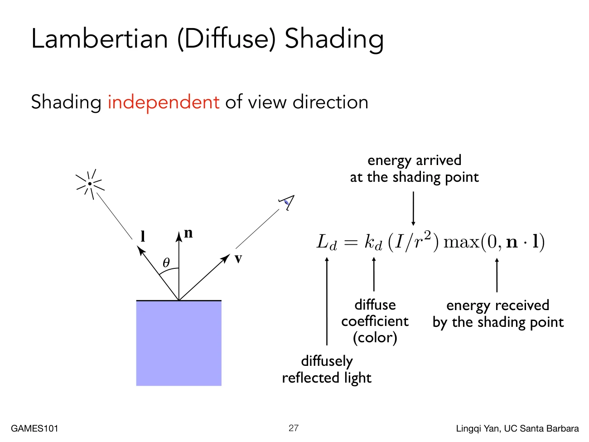
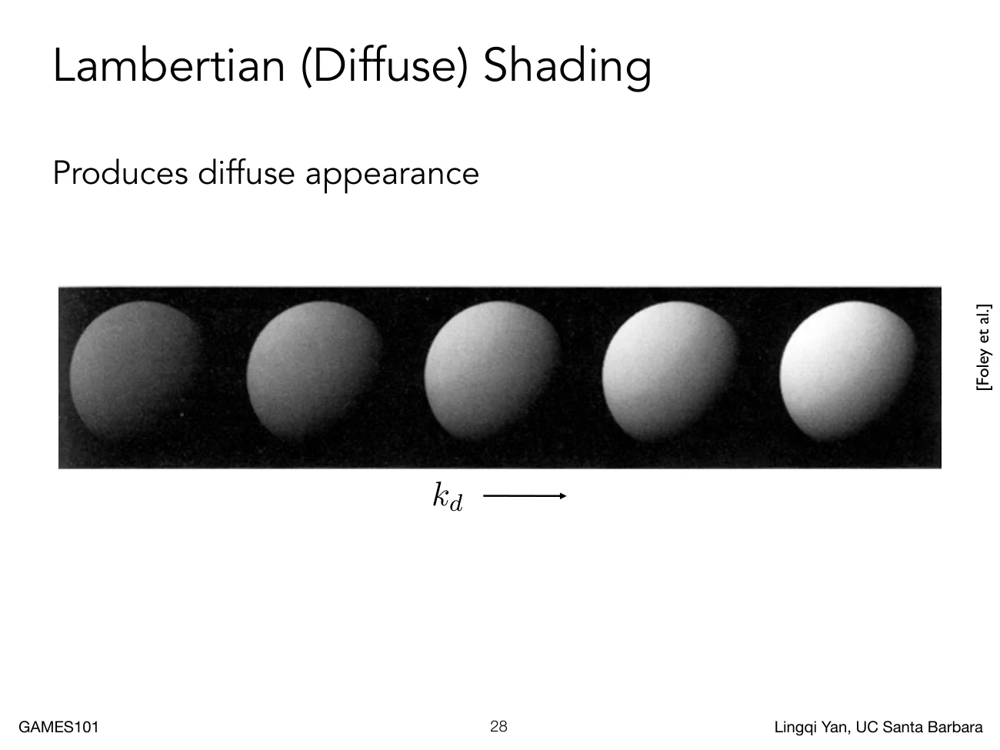

第 7 讲：着色（一）——可见性与 Blinn-Phong 光照模型
用 Z-Buffer 解决谁挡住谁，再用 Blinn-Phong 模型给每个像素算颜色
◆ 学完这一讲，你应该能
能说清画家算法（Painter's Algorithm）为什么不可靠，以及 Z-Buffer 如何用 O(n) 解决可见性问题
能写出 Z-Buffer 的初始化与逐样本更新逻辑，并解释为什么它不需要对三角形排序
能区分「着色（Shading）」与「阴影（Shadow）」，理解局部着色模型的输入与局限
能推导 Lambert 余弦定律与距离衰减，写出漫反射项 \(L_d = k_d (I/r) \max(0, n \cdot l)\)
能在 UE/Unity 中对应找到 Z-Buffer、局部光照模型、漫反射材质参数的实际位置
核心结论速记
画家算法按深度从远到近画，需要 O(n log n) 排序，且存在无法排序的深度循环（互相遮挡）情况。
Z-Buffer 为每个像素额外存一个当前最小深度，逐三角形逐样本比较，总复杂度 O(n)，是 GPU 硬件实现的可见性算法。
Z-Buffer 约定 z 越小越近，初始化深度为无穷大，只有新样本 z 更小时才写入颜色和深度。
着色（Shading）是「给物体应用材质」的过程；本讲的 Blinn-Phong 是局部模型，只看着色点、法线、光源方向、视线方向，不产生阴影。
漫反射与视线方向无关：光线被均匀散射到各个方向，所以从任何角度看颜色一样。
Lambert 余弦定律：单位面积接收的光能量正比于 \(\cos\theta = l \cdot n\)，光垂直照射时最亮，掠射时趋近于 0。
点光源能量按距离平方衰减，课件用 \(I/r\) 表示到达着色点的强度（工程上常写 \(I/r^2\)，注意单位与约定）。
漫反射项 \(L_d = k_d (I/r) \max(0, n \cdot l)\)：\(k_d\) 是漫反射系数（颜色），\(\max(0,\cdot)\) 保证背光面不出现负光照。
011. 从「谁挡住谁」说起：画家算法为什么不够用
上一讲我们学会了把三角形光栅化成像素，但屏幕上同一像素可能被多个三角形覆盖，最终该显示谁？最直觉的办法是画家算法（Painter's Algorithm）：像画家画油画一样，先画远处的物体，再用近处的物体覆盖它。
这个办法的问题有两个：
- 需要排序。要按深度从远到近画，就得对所有三角形排序，n 个三角形是 \(O(n \log n)\)。
- 存在无法排序的情况。三个三角形可能互相遮挡形成深度循环（A 挡 B、B 挡 C、C 挡 A），此时不存在一个「从远到近」的全局顺序，画家算法直接失效。
课件用 Foley 等人的经典图说明了这种深度循环。现实中的场景又大又复杂，靠排序既慢又不可靠。于是我们需要一个逐像素而不是逐三角形的办法——这就是 Z-Buffer。

补充说明
课件在这里只做定性说明，没有给画家算法的伪代码；重点是理解「排序不可靠」这个动机。
常见坑
误以为画家算法只是「慢一点」→ 实际上深度循环时它根本给不出正确结果 → 遇到互相穿插的几何体要换 Z-Buffer 或逐像素深度测试。
把「按物体排序」和「按三角形排序」混为一谈 → 物体级排序无法处理单个物体内部三角形互相遮挡 → 必须细到图元/样本级。
UE / Unity 落地
UE/Unity 的渲染管线默认使用深度缓冲（Depth Buffer）做可见性，画家算法只出现在某些 2D 排序或透明物体排序中。
透明物体（半透明材质）通常关闭深度写入、只做深度测试，并按距离排序绘制——这其实是画家算法的现代残留，所以透明物体互相穿插时仍会排序错误。
022. Z-Buffer：为每个像素记一个「当前最近深度」
Z-Buffer（深度缓冲）的思路非常朴素：为每个像素（更准确地说是每个采样点）记录目前见过的最小深度值。除了帧缓冲（frame buffer）存颜色，我们再开一个缓冲存深度。
课件特别强调一个约定：为简单起见，假设 z 永远为正，z 越小越近，z 越大越远。这一点很重要，因为不同图形 API 的深度范围约定不同（有的用 [-1,1]，有的用 [0,1]，有的做反向 Z），读代码时先确认约定。
算法只有几行：
- 初始化：把深度缓冲全部设为无穷大（\(\infty\)），表示「还没有任何东西」。
- 光栅化每个三角形时，对三角形覆盖的每个样本 \((x,y,z)\)：
- 如果 \(z < \text{zbuffer}[x,y]\)，说明这个样本比之前记录的更近，就更新颜色 \(\text{framebuffer}[x,y] = \text{rgb}\)，并更新深度 \(\text{zbuffer}[x,y] = z\)；
- 否则什么也不做，这个样本被挡住了。
注意这里比较的是逐样本的深度，不是整个三角形的深度。所以三角形互相穿插也能正确处理——每个像素独立决定自己显示谁。


补充说明
课件用 \(I/r\) 表示距离衰减，严格物理上点光源是 \(I/r^2\)；课件这样写是为了简化，后续讲光照时沿用同一记号，做题时以课件公式为准。
常见坑
深度缓冲没清成无穷大（或清成 0）→ 所有远处物体被误判为更近/更远 → 检查每帧开始是否 clear depth buffer。
把 z 的约定搞反（以为 z 大更近）→ 近处物体被远处物体覆盖 → 确认投影矩阵与深度测试函数（LESS 还是 GREATER）。
只按三角形重心深度做整三角形比较 → 穿插三角形显示错误 → 必须逐样本（逐像素）比较深度。
UE / Unity 落地
UE 的深度缓冲在渲染管线中自动维护，材质里可用
SceneDepth节点读取；Unity 中对应_CameraDepthTexture与ZTest/ZWrite指令。材质的
ZTest LEqual（深度测试）与ZWrite On/Off（是否写深度）就是 Z-Buffer 算法的开关；半透明材质常设ZWrite Off。UE 的「Custom Depth / Stencil」是额外的一张深度缓冲，用于描边、遮挡高亮等，和主 Z-Buffer 是两套。
Z-Buffer 伪代码（与课件一致）（cpp）
// 初始化
for each pixel (x, y):
zbuffer[x][y] = +INFINITY;
framebuffer[x][y] = background_color;
// 光栅化阶段
for each triangle T:
for each sample (x, y, z) in T:
if (z < zbuffer[x][y]) { // 比当前最近还近
framebuffer[x][y] = rgb; // 更新颜色
zbuffer[x][y] = z; // 更新深度
}
// else: 被遮挡，什么也不做033. 为什么 Z-Buffer 是 O(n)：不排序也能正确
一个常见疑问：画家算法要排序才能正确，Z-Buffer 不排序，凭什么对？
关键在于Z-Buffer 的正确性与绘制顺序无关。对每个像素来说，它最终保留的是所有覆盖它的样本中 z 最小的那个——这等价于「取最小值」这个操作，而取最小值满足交换律和结合律，所以先画谁后画谁结果都一样。
复杂度上，假设每个三角形覆盖的样本数是常数（课件说 constant coverage），那么 n 个三角形总共处理 \(O(n)\) 个样本，每个样本做一次比较和可能的写入，所以是 \(O(n)\)。
课件还提了一句：这是最重要的可见性算法，并且所有 GPU 都在硬件里实现了它。也就是说，你在 UE/Unity 里写材质时，深度测试是硬件免费帮你做的，不需要自己写循环。
补充说明
课件没有展开 Early-Z，这里作为工程背景补充，不影响本讲结论。
常见坑
以为「不排序」等于「不需要深度信息」→ 深度信息仍然要逐样本插值得到 → 顶点深度的透视校正插值不能省。
认为 Z-Buffer 的 O(n) 与覆盖面积无关 → 如果三角形铺满全屏，样本数会远大于 n → 复杂度应按「样本数」而不是「三角形数」估算。
UE / Unity 落地
GPU 的深度测试发生在光栅化之后的逐片元阶段，属于固定功能硬件；你在 Shader 里写的片元着色器通常只在通过深度测试后才执行（Early-Z 优化）。
UE 的「Early Z Pass」和 Unity 的
DepthPriming都是利用提前深度测试减少无效着色，本质是 Z-Buffer 的工程优化。
044. 着色是什么：局部模型只看一个点
解决了可见性，接下来解决「颜色从哪来」。课件给出 Merriam-Webster 的词典定义（用线条或色块给插图加深/上色），但在本课程里，着色（Shading）就是「把材质应用到物体上的过程」。
本讲介绍的模型叫 Blinn-Phong 反射模型（Blinn-Phong Reflectance Model）。它有三个关键设定：
- 着色是局部的（Shading is Local）。计算某个着色点朝相机反射的光，只用到： - 观察方向 \(v\)（viewer direction） - 表面法线 \(n\)（surface normal） - 光照方向 \(l\)（light direction，对每个光源各有一个） - 表面参数（颜色、光泽度 shininess 等）
- 不产生阴影。课件明确写「shading ≠ shadow」：局部模型不知道别的物体挡没挡光，所以不会生成阴影。阴影需要额外的全局可见性计算（阴影贴图等）。
- 它把光照拆成三项：高光（specular highlights）、漫反射（diffuse reflection）、环境光（ambient lighting），这是从感知观察中总结出来的。
本讲只详细讲漫反射，高光与环境光留到下一讲。


补充说明
课件把「着色 = 应用材质」作为定义，这与引擎里「材质决定着色结果」的说法一致。
常见坑
把「着色」和「阴影」当成一回事 → 局部模型只算直接光照，没有遮挡信息 → 需要阴影要额外开阴影贴图/光追。
法线方向没归一化 → 点积结果不在 [-1,1]，亮度异常甚至出现负值 → 传进着色器前 normalize。
把 \(l\) 的方向搞反（指向光源还是从光源指出）→ 漫反射全黑或全亮 → 统一约定：\(l\) 是从着色点指向光源的单位向量。
UE / Unity 落地
UE 的默认光照（Default Lit）就是基于物理的微表面模型，可以看作 Blinn-Phong 的进阶版；材质里的 Base Color、Roughness、Specular 分别对应漫反射系数、光泽度、高光强度。
Unity 的 Standard Shader 同理；内置的
BlinnPhongshader 则直接对应本讲模型，适合教学对比。UE/Unity 的「阴影」是独立于材质着色的管线阶段（Shadow Map），印证了 shading ≠ shadow。
055. 漫反射：为什么从哪个角度看都一样亮
漫反射（Diffuse Reflection） 的物理直觉是：光线打到粗糙表面后被均匀地散射到所有方向。既然各个方向都有光出来，那么从哪个方向看，进入眼睛的能量都一样——所以表面颜色与观察方向无关。
但「接收到多少光」和「往哪个方向看」是两件事。课件接着问：着色点到底接收了多少能量？答案由 Lambert 余弦定律（Lambert's cosine law） 给出：
\[ \text{单位面积接收的光} \propto \cos\theta = l \cdot n \]
直觉解释：想象一束固定宽度的光。当表面正对光源（\(\theta=0\)，\(\cos\theta=1\)）时，光垂直打在单位面积上，能量最集中；当表面倾斜 60°，同样的光束摊到更大的面积上，单位面积分到的能量减半（\(\cos 60^\circ = 0.5\)）。课件用「立方体顶面旋转 60° 后截获一半光」的图来说明这一点。
所以漫反射的亮度正比于 \(\max(0, n \cdot l)\)：点积为负说明光在表面背面，直接取 0，避免出现负光照。

补充说明
课件写 \(I/r\) 是简化记号；严格的点光源辐照度按平方反比衰减，工程实现里还会加距离截断避免除零。
常见坑
忘记 \(\max(0, n \cdot l)\) 直接取点积 → 背光面出现负亮度，颜色发黑或出现异常 → 加 clamp 到 0。
把 \(n \cdot l\) 当成「亮度」而忽略距离衰减 → 远处光源和近处一样亮 → 还要乘 \(I/r\)（或 \(I/r^2\)）。
法线与光线方向不在同一空间（一个世界空间一个切线空间）→ 点积结果完全错误 → 统一变换到世界空间再点乘。
UE / Unity 落地
UE 材质里的
Lambert光照模型或Default Lit的 Diffuse 部分都包含 N·L 项；Two Sided材质会对背面翻转法线。Unity 的 Surface Shader 中
NdotL就是 \(n \cdot l\)；Lighting.cginc里的Lambert函数可直接参考。引擎里通常用 \(1/r^2\) 衰减并配合光源半径/单位换算，和课件的 \(I/r\) 记号不同，但结构一致。
066. 把漫反射写成公式：Lambertian Shading
把「接收多少能量」和「材质反射多少」乘起来，就得到 Lambertian（漫反射）着色公式：
\[ L_d = k_d \cdot \frac{I}{r} \cdot \max(0, n \cdot l) \]
逐项解释：
- \(L_d\)：漫反射出去的光（颜色），最终贡献到像素颜色。
- \(k_d\)：漫反射系数（diffuse coefficient），可以理解为材质本身的颜色/反照率（albedo）。
- \(I/r\)：到达着色点的光强，\(I\) 是光源强度，\(r\) 是距离，越远越暗。
- \(\max(0, n \cdot l)\)：Lambert 余弦项，保证背光面为 0。
注意公式里没有 \(v\)。这正是「漫反射与观察方向无关」的数学体现。
课件最后用 Foley 等人的图展示了 \(k_d\) 取不同值时的漫反射外观：\(k_d\) 越大表面越亮，越小越暗。实际渲染中还会叠加环境光项，避免背光面全黑——这部分下一讲展开。


补充说明
课件用 \(I/r\)，工程中常用 \(I/r^2\)；两者结构相同，考试/作业以课件为准。
常见坑
把 \(k_d\) 当成标量亮度 → 实际它可以是 RGB 颜色，不同通道反射率不同 → 用颜色向量逐通道相乘。
公式里多乘了一个 \(v\) 项 → 漫反射被错误地做成视角相关 → 删掉 \(v\)，漫反射只依赖 \(n\) 和 \(l\)。
距离 \(r\) 用世界坐标差但没考虑单位 → 场景缩放后亮度整体变化 → 统一世界单位或改用引擎的光照单位。
UE / Unity 落地
UE 的 Base Color 就对应 \(k_d\)；
Metallic=0、Roughness较高时，材质表现接近漫反射。Unity 的 Albedo 颜色对应 \(k_d\)；内置
Legacy Shaders/Diffuse就是 Lambert 模型。引擎的光照计算通常在延迟渲染的 GBuffer 里完成，但公式结构与课件一致。
HLSL 片段：Lambert 漫反射（hlsl）
float3 n = normalize(worldNormal);
float3 l = normalize(lightPos - worldPos);
float r = length(lightPos - worldPos);
float ndotl = max(0.0, dot(n, l));
float3 Ld = kd * (lightIntensity / r) * ndotl;引擎对照表
| 概念 / 效果 | Unreal Engine | Unity |
|---|---|---|
深度缓冲 / 可见性 | 自动维护的 SceneDepth，材质可读；Custom Depth 为额外深度 | _CameraDepthTexture，Shader 里 ZTest/ZWrite 控制 |
局部光照模型 | Default Lit 材质（PBR，Blinn-Phong 的进阶） | Standard Shader / 内置 BlinnPhong Shader |
漫反射系数 kd | Base Color | Albedo |
距离衰减 | 光源的 Attenuation Radius 与 Intensity 单位 | Light 的 Range / Intensity |
着色 ≠ 阴影 | 阴影由 Shadow Map 阶段单独生成 | Shadow Map / 阴影距离设置 |
透明物体排序 | Translucency Sort Priority | Renderer Sorting Order / Queue |
术语双语表
| English | 中文 | 说明 |
|---|---|---|
| Painter's Algorithm | 画家算法 | 按深度从远到近绘制，需要排序且无法处理深度循环。 |
| Z-Buffer | 深度缓冲 | 为每个样本存当前最小深度，逐样本比较决定可见性，O(n)。 |
| Frame Buffer | 帧缓冲 | 存储每个像素最终颜色值的缓冲。 |
| Shading | 着色 | 把材质应用到物体上、计算表面颜色的过程。 |
| Blinn-Phong Reflectance Model | Blinn-Phong 反射模型 | 把光照拆成环境光、漫反射、高光三项的局部经验模型。 |
| Diffuse Reflection | 漫反射 | 光被均匀散射到各方向，颜色与观察方向无关。 |
| Lambert's Cosine Law | Lambert 余弦定律 | 单位面积接收光能正比于 cosθ = n·l。 |
| Diffuse Coefficient | 漫反射系数 | 公式中的 kd，表示材质反照率/颜色。 |
| Specular Highlights | 高光 | 表面接近镜面反射时出现的亮斑，与观察方向有关。 |
| Ambient Lighting | 环境光 | 近似间接光照的常数项，避免背光面全黑。 |
课后练习
01 画家算法在什么情况下会失效？Z-Buffer 为什么不需要排序也能得到正确结果？
查看答案
提示：
从「深度循环」和「取最小值与顺序无关」两个角度想。
画家算法需要按深度从远到近排序，当三个及以上三角形互相遮挡形成深度循环（A 挡 B、B 挡 C、C 挡 A）时不存在合法顺序，因此失效。Z-Buffer 对每个样本保留所有覆盖它的样本中 z 最小的那个，等价于逐样本取最小值；取最小值满足交换律和结合律，所以绘制顺序不影响最终结果。
02 写出 Z-Buffer 的初始化与更新伪代码，并说明为什么深度缓冲要初始化为无穷大。
查看答案
提示：
初始值必须比任何真实深度都大（按课件 z 越小越近的约定）。
初始化：对每个像素 zbuffer[x][y] = +∞，framebuffer 设为背景色。更新：对每个三角形 T 的每个样本 (x,y,z)，若 z < zbuffer[x][y]，则 framebuffer[x][y] = rgb，zbuffer[x][y] = z；否则不处理。初始化为无穷大是为了保证第一个覆盖该像素的样本一定满足 z < zbuffer，从而被写入；否则初始值可能比真实深度还小，导致所有样本都被误判为被遮挡。
03 一个点光源强度 I=100，距离着色点 r=5，表面法线与光线方向夹角 θ=60°，kd=0.8。按课件公式 \(L_d = k_d (I/r) \max(0, n \cdot l)\) 计算漫反射亮度。
查看答案
提示：
cos60° = 0.5。
Ld = 0.8 × (100/5) × cos60° = 0.8 × 20 × 0.5 = 8。注意若按物理正确的 I/r² 计算则为 0.8 × (100/25) × 0.5 = 1.6，数值不同但结构一致；作业以课件公式为准。
04 为什么漫反射公式里没有观察方向 v？如果强行乘上 v·n 会发生什么？
查看答案
提示：
漫反射的定义是光被均匀散射到所有方向。
漫反射的光被均匀散射到各个方向，进入眼睛的能量与观察方向无关，所以公式不含 v。若乘上 v·n，亮度会随视角变化，掠射角变暗、正对变亮，看起来像有方向性的反射，违背漫反射的物理直觉，也会让平坦表面出现不应有的视角相关明暗变化。
05 在 UE 或 Unity 中，如何验证「着色 ≠ 阴影」？请给出一个可操作的小实验。
查看答案
提示：
关掉阴影相关选项，观察物体之间是否还有投影。
在 UE 中把光源的 Cast Shadows 关闭（或把物体 Mobility 设为 Movable 并关闭阴影），物体表面仍有明暗（N·L 着色），但地面不再出现物体投影；在 Unity 中关闭 Light 的 Shadow Type 或 Quality 设置里关阴影同理。这说明着色只计算局部直接光照，阴影是独立的 Shadow Map 阶段产生的。